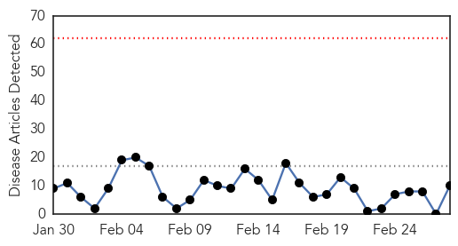

30 Day Trends
Web: 0 alerts, 0 warnings
Twitter: 1 alerts, 0 warnings
Top Articles:
- 1.000
- Flu sufferers younger, sicker in New York, reflecting U.S. trend
- 0.998
- The next flu drug might already be in your medicine cabinet
- 0.998
- Deadly flu season hits home hard and it’s not over yet
- 0.993
- Middle Eastern Virus More Widespread Than Thought
- 0.991
- Young, Middle Aged Adults Hardest Hit By This Season's Flu
- 0.977
- Flu Pandemic 'Violent, But Not Deadlier'
- 0.973
- Swine Flu causes first death in Albania
- 0.770
- Scientists may shortly be able to predict the flu
- 0.701
- Dead poultry spark fears of outbreak, National, Phnom Penh Post
- 0.554
- Slap on a Flu Patch? New Vaccine Would Skip the Needle > KAGS TV
Top Tweets:
-
No tweets found for Feb 28, 2014
Web/News Articles
Tweets

Article Locations